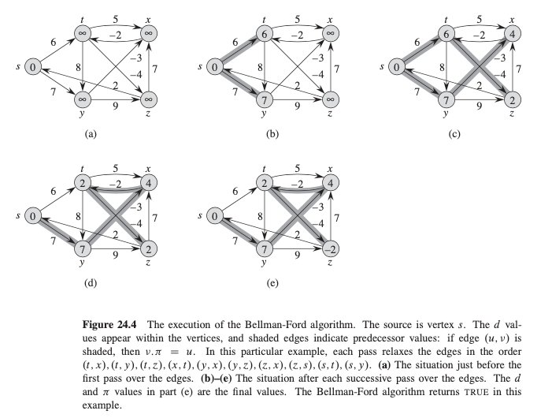

Lecture 12: The Bellman-Ford Algorithm#
Overview#
The
Bellman-Fordalgorithm solves the single-source shortest-paths problem in the general case in whichedge weights may be negative.The Bellman-Ford algorithm returns a boolean value indicating whether or not there is a negative-weight cycle that is reachable from the source.
If there is such a cycle, the algorithm indicates that no solution exists.
If there is no such cycle, the algorithm produces the shortest paths and their weights.
Bellman-Ford Algorithm#
Find the shortest paths from source \(s\) to every vertex \(v\) in a weighted graph. The weights may be negative
Algorithm: \(O(VE)\)
def bellman_ford(G, s):
initialize_single_source(G,s)
for i in range(len(G.V)-1):
for (u,v) in G.E:
relax(u,v,w)
for (u,v) in G.E:
if v.d > u.d + w(u,v):
return False
return True
Example
